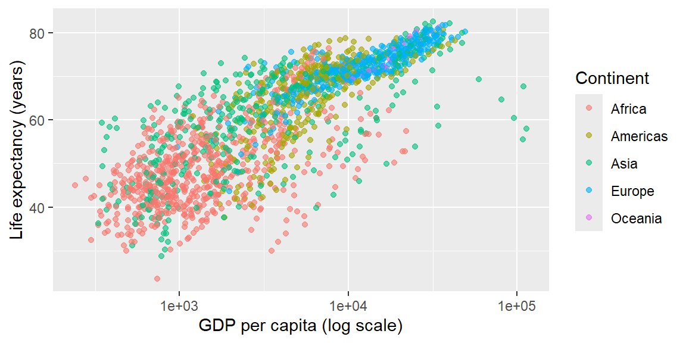

library(tidyverse)2 Quarto basics for reproducible assignments
Objectives
- Appreciate the value of reproducible research. Combining code, results, and prose in a single document improves transparency, facilitates collaboration, and serves as a lab notebook. Quarto integrates the lessons of the R Markdown ecosystem and is designed for analysts, collaborators, and decision-makers alike.
- Learn the basics of Quarto documents. Create and render a
.qmdfile with a YAML header and interleaved code and narrative. Understand global settings in the YAML, chunk labels, and what actually happens when a label is reused by accident. - Use chunk options effectively. Control evaluation, code display, warnings, and messages with chunk options (
eval,include,echo,message,warning). Learn how inline code reports dynamic values inside your prose, and what happens when that inline code itself fails. - Produce a table with
knitr::kable(). Know its default formatting choices (how many decimal places it shows, and how it displays missing values) well enough not to be surprised by them. - Distinguish caching from freezing. Recognize
cache: true(a local, per-chunk performance cache) as a different mechanism fromexecute: freeze(the project-wide, version-controlled cache this very book relies on), and know which one solves which problem. - Render and submit a Quarto document. By the end of this session you should be able to write, render, and hand in a
.qmdfile, since every assignment for the rest of this course is submitted this way.
Notes
Why reproducible research?
In an exploratory notebook, it’s easy to lose track of which code produced which result. Reproducible research solves this by knitting analysis and narrative together, so that anyone, including future you, can rerun the whole thing and get the same output. This is sometimes called literate programming: code interspersed with human-readable explanation. Quarto, the modern successor to R Markdown, is the tool this course (and this very book) uses for it. A .qmd file has three parts: a YAML header (metadata and settings, delimited by ---), narrative text in Markdown, and code chunks that Quarto actually executes when rendering. Every assignment in this course is a .qmd file that you render and submit, so getting comfortable with these three parts now pays off immediately.
Quarto basics and YAML
A minimal Quarto document’s header looks like this:
---
title: "Global life expectancy report"
author: "Your Name"
date: 2025-11-18
format: html
---format sets the default output; common values are html, pdf, and docx. An expanded format: field customizes options, or produces more than one output at once:
format:
html:
toc: true # table of contents
code-fold: true # collapsible code blocks
embed-resources: true # bundle images/CSS into one standalone .html file
pdf: default
docx: defaultembed-resources is worth knowing about specifically: without it, an HTML file’s images and styling live in separate files alongside it, which breaks the moment you email just the .html on its own, or upload only that one file to a course dropbox; with it, everything is bundled into one self-contained file, which is exactly what you want when submitting an assignment. Rendering happens with quarto render my-document.qmd from the command line, or quarto::quarto_render() from R (both support an output_format argument that overrides the YAML). A params field in the YAML can declare inputs (accessed as params$name inside the document), turning a single .qmd file into a template you can re-render for different inputs without editing the file itself.
Code chunks and options
Each code chunk can carry a label (#| label: setup) for cross-referencing, and options that control execution and display: eval: false shows code without running it, include: false runs code but hides both it and its output (handy for setup chunks), echo: false hides code but shows results, and message: false/warning: false suppress exactly what they say. Options go on #| option: value lines right after the opening fence.

Chunk labels have to be unique across the whole document; reusing one is a real, render-stopping mistake, not a cosmetic issue (see Example 2.1). Setting shared options once under execute: in the YAML (echo: false, message: false, warning: false, exactly the settings this book itself uses) saves repeating them in every chunk; an individual chunk can still override the default locally.
Tables with knitr::kable()
A data frame printed directly inside a chunk shows console-style output; knitr::kable() instead formats it as a proper Markdown (and, on render, HTML or PDF) table.
mtcars |>
select(mpg, cyl, disp) |>
head() |>
knitr::kable()| mpg | cyl | disp | |
|---|---|---|---|
| Mazda RX4 | 21.0 | 6 | 160 |
| Mazda RX4 Wag | 21.0 | 6 | 160 |
| Datsun 710 | 22.8 | 4 | 108 |
| Hornet 4 Drive | 21.4 | 6 | 258 |
| Hornet Sportabout | 18.7 | 8 | 360 |
| Valiant | 18.1 | 6 | 225 |
For anything beyond a simple table (styling, merged cells, interactivity), packages like gt, kableExtra, and reactable build on the same idea with considerably more control. kable()’s own default formatting choices are worth knowing before you rely on them for an assignment (see Example 2.4).
Rendering to multiple formats
Quarto renders one .qmd file into as many formats as the YAML’s format: field lists, each with its own options:
format:
html:
toc: true
toc-float: true
pdf: default
docx: defaultRendering this document produces .html, .pdf, and .docx files in one call. To render just one format on demand rather than every configured one, pass output_format to quarto_render():
quarto::quarto_render("my-report.qmd", output_format = "docx")PDF output specifically needs a LaTeX installation; RStudio offers to install a minimal one (TinyTeX) automatically the first time you render to PDF without one. If an assignment asks for a PDF and rendering fails with a message about pdflatex or tinytex, that missing LaTeX installation, not a mistake in your code, is almost always the cause.
Inline code and narrative
Inline code, an R expression wrapped in a special inline-code span, evaluates that expression and inserts its result directly into your prose when the document renders, which keeps statements about your data accurate as the underlying analysis changes. A small helper function keeps inline number formatting consistent:
Writing two such inline expressions in a sentence, one calling comma(nrow(gapminder)) and the other calling length(unique(gapminder$year)), each wrapped in inline-code syntax, renders as: The gapminder dataset contains 1,704 observations across 12 years. If the expression inside an inline code span itself errors, that failure isn’t quietly swallowed either; the whole render stops (see Example 2.2), the same as a code chunk failing would.
Caching versus freezing
Two different mechanisms both promise “don’t rerun code that hasn’t changed,” and they solve different problems. Chunk-level cache: true is a local performance optimization: knitr stores a chunk’s results in a hidden _cache folder on your own machine, meant to save time while you iterate, not to be committed to version control. Project-wide execute: freeze: auto, the setting this book’s own _quarto.yml actually uses, works differently: it stores each chapter’s execution results in a _freeze folder that is committed to git, so that Continuous Integration (or a collaborator on a different machine) can render the whole book without needing every package this book uses installed, reusing the cached results for any chapter whose source hasn’t changed. Confusing the two is an easy mistake (see Example 2.3).
Fringe cases and common pitfalls
ExampleExample 2.1
A duplicate chunk label doesn’t just cause a cosmetic warning; it stops the whole render.
Two chunks in the same document both labeled #| label: setup produce this real error:
Error in parse_block(g[-1], g[1], params.src, markdown_mode) :
Duplicate chunk label 'setup', which has been used for the chunk:
1 + 1
Execution haltedQuarto uses chunk labels for cross-references and for naming generated figure files, so it needs every label in a document to be unique, and it refuses to guess which “setup” chunk you actually meant. This is exactly the kind of error most likely to show up after copying a chunk (setup code, a common summary pattern) from an earlier assignment’s .qmd file into a new one without renaming its label. If a render fails with “Duplicate chunk label,” search the document for that exact label; there will be at least two.
ExampleExample 2.2
An error inside inline code halts the render too, the same as an error inside a full code chunk.
Writing a sentence that references an object that doesn’t exist through inline R code, such as an undefined nonexistent_variable_xyz, produces a real, render-halting failure the moment Quarto tries to evaluate it:
Error:
! object 'nonexistent_variable_xyz' not found
Quitting from report.qmd:42-42
Execution halted(This example describes the error rather than triggering it live, since doing so would halt the render of this very chapter, which is exactly the point being illustrated.) It can be tempting to think of inline code as “just text with a little bit of R sprinkled in,” safer somehow than a full chunk, but Quarto evaluates it exactly the same way, and a failure there is exactly as fatal to the render as a failure inside a chunk. This matters most right before an assignment is due: if the very last sentence of your document has a typo in an inline expression, the whole file fails to render, tables and plots included, not just that one sentence.
ExampleExample 2.3
cache: true and execute: freeze solve similar-sounding problems in genuinely different ways, and mixing them up causes real confusion.
cache: true on an individual chunk tells knitr to save that chunk’s results locally (in a _cache folder next to the document) so that re-rendering the same document on the same machine can skip recomputing it, purely as a speed optimization for you, right now, while you iterate. It is not meant to be committed to git, and by default it does not know to invalidate itself if a chunk depends on an external file that changed (you’d need cache.extra = file.mtime("data/some_file.csv") to teach it that).
This book’s own _quarto.yml uses something different: execute: freeze: auto, which stores each chapter’s full execution results in a _freeze folder that is committed to git. That’s precisely why the GitHub Actions workflow that builds and publishes this book doesn’t need to install arrow, duckdb, or every other package used somewhere in these twenty-plus chapters just to rebuild the one chapter you actually edited; unchanged chapters reuse their committed _freeze results, and only a chapter whose source actually changed gets re-executed. cache: true speeds up your own local iteration on one document; execute: freeze is what makes a whole multi-chapter book reproducible for anyone (or any CI system) that clones the repository.
ExampleExample 2.4
knitr::kable()’s default number of decimal places isn’t fixed, and missing values print as the literal text “NA.”
df <- tibble(price = c(1.23456789, NA), item = c("pen", "notebook"))
knitr::kable(df)| price | item |
|---|---|
| 1.234568 | pen |
| NA | notebook |
options(digits = 3)
knitr::kable(df)| price | item |
|---|---|
| 1.24 | pen |
| NA | notebook |
The same call to kable() on the same data frame produces a different number of decimal places (seven significant digits in the first table, three in the second) depending on the session-wide options("digits") setting, because kable() has no fixed default of its own; it inherits whatever the current R session’s numeric printing option happens to be. That option can be changed by earlier code in the same document (your own, or a package you loaded), so a table’s precision can shift for reasons that have nothing to do with the table itself. Separately, the missing price renders as the plain text NA sitting in the table cell, not as a blank space, which reads fine to someone who knows R but can look like a data error to a reader who doesn’t. Passing an explicit digits argument to kable() fixes the first problem, and wrapping a column in something like replace_na(price, "") before printing addresses the second, if a blank cell is what you actually want a reader to see.
Recap
| Term | Definition |
|---|---|
| YAML header | The ----delimited metadata block at the top of a .qmd file: title, author, format, and execution defaults. |
| Chunk label | A name (#| label: ...) identifying a code chunk; must be unique in the document, or the render fails. |
embed-resources |
An HTML output option that bundles images and styling into one self-contained file, ideal for submitting a single file. |
params |
YAML-declared inputs (accessed as params$name), turning a .qmd into a re-render-able template. |
knitr::kable() |
Formats a data frame as a proper table in the rendered output; its default decimal places follow the session’s options("digits"), and missing values print as the text NA. |
cache: true |
A local, per-chunk performance cache (not meant for git); doesn’t auto-invalidate on an external file change without cache.extra. |
execute: freeze |
A project-wide, git-committed cache of each document’s execution results, used for CI/collaborator reproducibility. |
| Inline code | An R expression wrapped in inline-code syntax inside prose; evaluated at render time, and just as capable of halting the render as a full chunk. |
Check your understanding
NoteProblems
- What are the three components of a
.qmdfile, and what is each one responsible for? - A report needs to be re-generated once per region, with only the region name changing each time. Which Quarto YAML feature is built for exactly this, and how would you access the region name inside the document?
- Two chunks in the same document are both labeled
analysis. What happens when you try to render it, and why does Quarto insist on unique labels in the first place? - Why should you submit an assignment as a single rendered HTML file with
embed-resources: truerather than the raw.htmlfile Quarto produces without it? - A colleague says they added
cache: trueto a slow chunk that reads an external CSV, and now the chunk doesn’t rerun even after they edited that CSV. What is actually going on, and how is this different from how this book’s own chapters stay up to date? - You call
knitr::kable()on a data frame with a missing value and notice the table prints seven decimal places for one number and the literal textNAfor the missing one. Explain both observations.
TipSolutions
A YAML header (metadata and default settings, such as title and output format), narrative text in Markdown (headings, paragraphs, lists), and code chunks (executable code whose output is inserted into the rendered document).
The
paramsfield in the YAML header declares an input, accessed inside the document asparams$name(for example,params$region); re-rendering with a different value passed for that parameter regenerates the report for a different region without editing the.qmdfile’s actual content.Quarto refuses to render and reports a “Duplicate chunk label” error naming the reused label, because labels are used to identify chunks for cross-referencing and to name generated figure files, and Quarto has no way to guess which of the two identically labeled chunks you actually meant in either context.
Without
embed-resources: true, the rendered HTML file depends on separate image and CSS files living alongside it; if you submit only the.htmlfile (to an email attachment or a course dropbox that accepts one file), those separate files don’t travel with it, and the document a grader opens is missing its plots and styling.embed-resources: truebundles everything into the one file you actually submit.cache: trueis a local performance cache that does not automatically know to invalidate itself when a chunk’s underlying dependency (like the CSV file) changes; it only detects changes to the chunk’s own code, unless the colleague explicitly adds something likecache.extra = file.mtime("data.csv")to make the cache dependent on that file too. This book’s own reproducibility instead relies onexecute: freeze, a different, project-wide, git-committed mechanism, and it faces an analogous risk: a frozen chapter’s cached results also won’t update on their own if only a referenced data file changes and the chapter’s own.qmdsource doesn’t, which is why deleting the relevant_freezeentry (or re-rendering explicitly) is sometimes necessary after changing shared data.kable()has no fixed decimal-place default of its own; it follows whatever the current R session’soptions("digits")is set to, so the same table can print with different precision depending on code that ran earlier in the same session. Separately,kable()displays a missing value as the plain textNAinside the table cell rather than leaving the cell blank, since it has no way to know whether a reader would prefer a blank cell or an explicit marker; an explicitdigitsargument and areplace_na()step before printing address the two issues respectively.